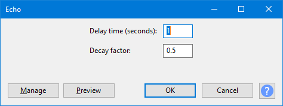

Echo
This effect repeats the audio you have selected again and again, normally softer each time. The delay time between each repeat is fixed, with no pause in between each repeat.
- Accessed by:
- 
{kind=link}
Unless your requested echo length (delay time) is less than the length of the selection, no echoes will be created. Also Echo does not generate additional audio beyond that selected. So if necessary you must add sufficient silence to the end of your track(s) to accommodate your echo settings.
- To add silence:
- Click in the selection and press End on your keyboard, or choose
- Choose
- Choose the duration of the silence you want to add to the selected audio, and click OK.
Delay time (seconds)
The amount of delay between the echoes, in other words the length of each echo.
Decay factor
Usually a number between 0 and 1. A value of 0 means no echo, and a value of 1 means that each echo is exactly as loud as the original, so this merely extends the current selection unchanged. A value of 0.5 reduces the amplitude or loudness of each echo by half each time, so the audio dies out quite slowly. Smaller values make it die out more quickly. Values above 1 increase the amplitude of the echo each time, which you could use as a special effect.
| Because echoes are often added to the original audio, the processed audio will often have a higher peak level than the original. If clipping results, you can the Echo effect, to a lower level, then apply Echo again. |
Using Echo for loops: Echo can be used to create a simple loop with volume changes without any problem about gaps between each segment of the loop.
- If you want a loop with no volume changes, use instead.
- You can also create echoes with which generates the additional audio needed for your chosen delay time and number of echoes.
Clicking on the command buttons give the following results:
- gives a dropdown menu enabling you to manage presets for the tool and to see some detail about the tool. For details see Manage presets.
- plays a short preview of what the audio would sound like if the effect is applied with the current settings, without making actual changes to the audio. The length of preview is determined by your setting in , the default setting is 6 seconds.
- applies the effect to the selected audio with the current effect settings.
- aborts the effect and leaves the audio unchanged.
 brings you to the appropriate page in the Manual, this page.
brings you to the appropriate page in the Manual, this page.